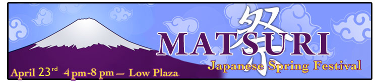

 <table><tr><td align="center"></td></tr></table>

<div id="matsurinav">
<div class="matsuri">  

<table><tr><td align="left">


  <!-- Begin Top Bar -->
<div id="top-bar">
<div class="wrapper">
<div id="horiz-menu" class="moomenu">
<ul class="menutop">

<li><a href="index.html"><span>Matsuri</span></a>
<ul><li><a href="index.html"><span>Matsuri 2011</span></a></li>
<li><a href="../matsuri2010"><span>Matsuri 2010</span></a></li>
<li><a href="../matsuri2009"><span>Matsuri 2009</span></a></li>
</ul></li>


<li><a href="directions.html"><span>Directions</span></a></li>

<li><a href="brochure.html"><span>Brochure</span></a></li>

<li><a href="cjsennichi.html"><span>Sidelines</span></a>
<ul><li><a href="cjsennichi.html#1"><span>Shateki<span></a></li>
<li><a href="cjsennichi.html#2"><span>Calligraphy</span></a></li>
<li><a href="cjsennichi.html#3"><span>Face Painting</span></a></li>
<li><a href="cjsennichi.html#5"><span>Kingyo Sukui</span></a></li>
<li><a href="cjsennichi.html#6"><span>Jinja</span></a></li>
<li><a href="cjsennichi.html#7"><span>Water Yo-Yo Fishing</span></a></li>
<li><a href="cjsennichi.html#8"><span>Arts and Crafts</span></a></li>
<li><a href="cjsennichi.html#9"><span>Ring Toss/ Wanage</span></a></li>
<li><a href="cjsennichi.html#10"><span>Sweets Table</span></a></li>

</ul></li>

<li><a href="washock.html"><span>Vendors</span></a>
<ul><li><a href="washock.html#1"><span>Go Go Curry</span></a></li>
<li><a href="washock.html#2"><span>Hakata TONTON</span></a></li>
<li><a href="washock.html#3"><span>Oms/B</span></a></li>
<li><a href="washock.html#4"><span>Yamachan Ramen</span></a></li>
<li><a href="washock.html#5"><span>Kiteya</span></a></li>
<li><a href="washock.html#6"><span>Magokoro</span></a></li>
<li><a href="washock.html#7"><span>Te plus te</span></a></li>
<li><a href="washock.html#8"><span>Wuhao New York(Tenugui)</span></a></li>
</ul></li>

<li><a href="stage.html"><span>Stage</span></a>
<ul><li><a href="stage.html#1"><span>CU Kendo</span></a></li>
<li><a href="stage.html#2"><span>CU Taiko Society</span></a></li>
<li><a href="stage.html#3"><span>Opening Ceremony</span></a></li>
<li><a href="stage.html#4"><span>Japanese Folk Dance Institute</span></a></li>
<li><a href="stage.html#5"><span>Sawai Koto Academy</span></a></li>
<li><a href="stage.html#6"><span>Uzuhi</span></a></li>
<li><a href="stage.html#7"><span>10Tecomai</span></a></li>
<li><a href="stage.html#8"><span>Closing Ceremony</span></a></li></ul></li>


<li><a href="club.html"><span>CU Clubs</span></a></li>
<li><a href="raffle.html"><span>Raffle</span></a></li></ul>	
<li><a href="sponsors.html"><span>Sponsor</span></a></li></ul>										


</div>
</div>
</div>
<!-- End Top Bar -->

</td></tr></table>